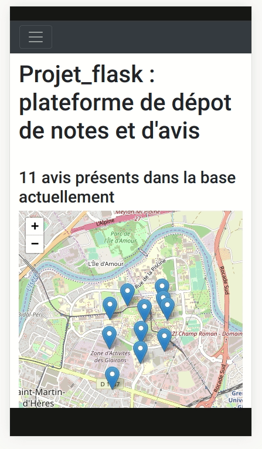

Interactions serveur/client, formulaires et BD
1. Préambule
Les objectifs de ce TP sont:
- de connecter l'application
Flaskà une base de données SQLite. - de créer un formulaire permettant d'ajouter une nouvelle entrée à cette base de données.
- d'utiliser une carte interactive leaflet pour sélectionner la localisation de l'avis.
Pour mobiliser les données de cette BD, nous n'aurons pas à saisir de requêtes SQL ; en effet nous allons utiliser un ORM (un Object Relational Mapping / un Mapping objet-relationnel) du nom de SQLAlchemy.
Il n'y a pas de code à saisir avant la fin cette partie où vous rencontrerez à nouveau le symbole '🚀'.
Liens utiles à propos de Flask et Jinja2:
- Documentation officielle de
Flask: https://flask.palletsprojects.com/en/1.1.x/ - Documentation officielle de
Jinja2: https://jinja.palletsprojects.com/en/2.11.x/ - Liste de plugins et de ressources pour
Flask: https://github.com/humiaozuzu/awesome-flask
Liens utiles sur le JavaScript:
- Mozilla Developpers Network - Premier pas en JavaScript : https://developer.mozilla.org/fr/docs/Learn/JavaScript/First_steps
- W3schools Javascript Tutorial : https://www.w3schools.com/js/
- Eloquent JavaScript - 3rd edition (online, PDF, E-PUB, etc.) : https://eloquentjavascript.net/
- Pour se faire la main en JavaScript il faut pratiquer... des exercices comme ceux de W3schools puis des sites comme JavaScript30 peuvent donner de bonnes occasions de pratiquer !
Liens utiles sur les fonctionnalités utilisées aujourd'hui:
- Élément HTML
<input>et ses attributs : https://developer.mozilla.org/fr/docs/Web/HTML/Element/input- Élément HTML
<a>et ses attributs : https://developer.mozilla.org/fr/docs/Web/HTML/Element/a- Élément HTML
<fieldset>: https://developer.mozilla.org/fr/docs/Web/HTML/Element/Fieldset- Documentation officielle de
Leaflet: https://leafletjs.com/reference-1.7.1.html- Liste de plugins et de ressources pour
Leaflet: https://leafletjs.com/plugins.html
Installation et création de la base de données
En utilisant PythonAnywhere cette bibliothèque est déjà installée, vous n'avez rien de particulier à faire.
Sinon il est possible d'installer SQLAlchemy et l'extension flask_sqlalchemy que nous allons utiliser avec Flask comme les autres packages Python.
Localisation de la base de données
Il est nécessaire d'indiquer à l'ORM où se situe la BD à laquelle se connecter, en l’occurrence, dans le même dossier que le code de l'application, avec le nom app.db:
from flask import Flask
from flask_sqlalchemy import SQLAlchemy
# On stocke le chemin absolu du dossier qui contient le fichier
# qui s'éxecute :
basedir = os.path.abspath(os.path.dirname(__file__))
app = Flask(__name__)
# app.config est un dictionnaire :
app.config['SQLALCHEMY_DATABASE_URI'] = 'sqlite:///' + os.path.join(basedir, 'app.db')
db = SQLAlchemy(app)
Créer un modèle correspondant au type d'entrées que nous souhaitons
Nous souhaitons stocker nos notes et avis dans une table Review.
Celle-ci va avoir 6 colonnes :
id_review(l'identifiant unique de l'avis),rate(une note, de 1 à 5, où 5 représente la plus forte note),comment(un champ de texte libre, limité à 255 caractères mais qui peut être laissé vide),name(un champ de texte où l'utilisateur inscrira son nom),latitude(un champ de nombres à virgule),longitude(un champ de nombre à virgule),
class Review(db.Model):
id_review = db.Column(db.Integer(), primary_key=True)
rate = db.Column(db.Integer(), nullable=False)
comment = db.Column(db.String(255))
name=db.Column(db.String(), nullable=False)
latitude=db.Column(db.Float(), nullable=False)
longitude=db.Column(db.Float(), nullable=False)
Ce code va permettre de modifier la base de données sans écrire de requêtes SQL mais en manipulant des objets Python.
Notez que nous avons spécifié le type attendu (db.Integer, db.String, ..) pour chaque colonne (db.Column) de la table (ici Review) que vous allons manipuler à travers ce modèle.
L'utilisation du modèle Review revient donc maintenant à mobiliser la table suivante:
| id_review | name | comment | rate | latitude | longitude |
|---|---|---|---|---|---|
| 1 | Cameran Duran | Mattis molestie a iaculis at erat pellentesque adipiscing commodo. | 5 | 45.1913376954 | 5.7700002193 |
| 2 | Nasim Erickson | Amet massa vitae tortor condimentum lacinia. | 4 | 45.1915115994 | 5.7732725143 |
| 3 | Guy Richardson | Imperdiet sed euismod nisi porta lorem mollis aliquam. | 3 | 45.1922903805 | 5.7727360725 |
| 4 | Veda Lott | Dignissim enim sit amet venenatis. Urna cursus eget nunc scelerisque. | 1 | 45.1929812805 | 5.7674560725 |
| 5 | Flavia Klein | A pellentesque sit amet porttitor eget dolor morbi. | 4 | 45.1934789176 | 5.7725615994 |
Utiliser le modèle pour communiquer avec la BD dans un style orienté-objet (1)
On pourra par exemple créer une review et l'ajouter à la base de données avec le code suivant :
new_review = Review(
rate=5,
comment="Mattis molestie a iaculis at erat pellentesque adipiscing commodo.",
name="Ada",
latitude=45.1913376954,
longitude=5.7700002193,
)
db.session.add(new_review)
db.session.commit()
Il n'est pas nécessaire d'indiquer l'identifiant de la review à créer : comme il s'agit d'une clé primaire, elle sera renseignée automatiquement lors de l'appel de la méthode db.session.commit() en fonction des entrées déjà présentes dans la table.
Utiliser le modèle pour communiquer avec la BD dans un style orienté-objet (2)
C'est également avec ce modèle Review qu'on pourra faire des requêtes sur la table correspondante :
# Renvoie toute les entrées de la table `Review` dans une `list` python
all_review = Review.query.all()
# Effectue une requete sur la table `Review`
# en utilisant la clé primaire (ici id_review):
review2 = Review.query.get(2)
Il est ensuite possible d'accéder aux valeurs qui correspondent à chacun des champs de la table Review pour une entrée donnée, en utilisant la notation par point :
# Demande la review avec 2 comme `id_review`
review2 = Review.query.get(2)
# Accès au champ `rate` de la review
print(review2.rate) # --> 4
# Accès au champ `comment` de la review
print(review2.comment) # --> "Amet massa vitae tortor condimentum lacinia."
Putting it all together...
Ce code correspond à l'adaptation du code obtenu à la fin du TP précédent, en se connectant cette fois à une base de données avec SQLAlchemy comme présenté ci-dessus.
🚀 Prenez-en connaissance attentivement et copiez-le dans le fichier flask_app.py dans votre espace PythonAnywhere.
🚀 Récupérez le fichier app.db, il s'agit de votre base de données SQLite. Copiez le dans votre espace PythonAnywhere dans le même dossier que le fichier flask_app.py.
from flask import Flask, render_template, request, url_for, redirect
from flask_sqlalchemy import SQLAlchemy
from datetime import date
import os
basedir = os.path.abspath(os.path.dirname(__file__))
app = Flask(__name__)
app.config['SQLALCHEMY_DATABASE_URI'] = 'sqlite:///' + os.path.join(basedir, 'app.db')
db = SQLAlchemy(app)
class Review(db.Model):
id_review = db.Column(db.Integer(), primary_key=True)
rate = db.Column(db.Integer(), nullable=False)
comment = db.Column(db.String(255))
name=db.Column(db.String(), nullable=False)
latitude=db.Column(db.Float(), nullable=False)
longitude=db.Column(db.Float(), nullable=False)
@app.route("/", methods=['GET', 'POST'])
@app.route('/index', methods=['GET', 'POST'])
def root():
if request.method == 'GET':
all_reviews = Review.query.all()
return render_template('index.html',
list_reviews=all_reviews,
nb_reviews = len(all_reviews),
current_date=date.today().isoformat())
elif request.method == 'POST':
new_review = Review(
rate=request.form['rate'],
comment=request.form['comment'],
name=request.form['name'],
latitude=request.form['latitude'],
longitude=request.form['longitude'],
)
db.session.add(new_review)
db.session.commit()
return redirect(url_for('root'))
@app.route('/review/<int:ident>')
def review(ident):
the_review = Review.query.get(ident)
if the_review:
return 'Rate: {} - Comment: {}'.format(the_review.rate, the_review.comment)
else:
return ''
2. Création d'un formulaire HTML à traiter côté serveur
Notre page d'accueil ne va plus se contenter de lister les avis déjà présents ; il va désormais être possible d'en ajouter de nouveaux grâce à un formulaire HTML.
Ce formulaire HTML sera remplit par le client, dans son navigateur Web puis envoyé (méthode HTTP POST) au serveur qui l'ajoutera à la base de données.
<!-- le début
de votre fichier ici
-->
<div class="row"> <!-- On utilise les lignes/colonnes Bootstrap ... -->
<div class="col-md-4 mx-auto"> <!-- .. pour obtenir rapidement une disposition agréable -->
<h3>Ajout d'un nouvel avis</h3>
<form action="{{ request.path }}" method="post">
<label for="rate">Rate: </label>
<output name="rateOutput" id="ageOutputId">5</output>
<!--
^^^ On utilise un élément 'output' ci-dessus pour afficher la valeur du slider ci-dessous
grace au code qui figure dans l'attribut 'oninput' : il s'agit de code JavaScript
qui reporte la valeur du slider sur l'element 'output' à chaque changement.
Ils sont tous les deux initialiser avec la meme valeur : 5.
-->
<input type="range" name="rate" id="rateInput" min="1" max="5" value="5" class="form-range" oninput="rateOutput.value = rateInput.value"/>
<label for="comment">Comment</label><br>
<!-- maxlenght="255" pour correspondre à la longueur du champ définit dans notre modèle `Review` : -->
<textarea name="comment" maxlength="255" placeholder="Laissez votre avis ici !" class="form-control"></textarea><br>
<label for="name">Name</label><br>
<input type="text" name="name" maxlength="255" class="form-control" placeholder="Saisir votre nom !" /><br>
<input type="number" id="inputLong" name="longitude" step="any" readonly />
<input type="number" id="inputLat" name="latitude" step="any" readonly />
<input type="submit" value="Envoyer" class="btn btn-primary" />
</form>
</div>
</div>
<!-- le reste de votre fichier ici, normalement :
<hr />
<p>Page générée le {{ current_date }}</p>
</div>
...etc.. -->
Explications :
- Ce formulaire, définit par l'élément HTML
<form> </form>va être envoyé au chemin définit dans l'attributaction(ici la route actuelle à laquelle la page a été appelée, en utilisant le mécanisme de template vu précédemment), avec la méthode HTTPpost. - Il contient un champ
<input>de typerange: c'est un slider numérique dont on peut définir les valeurs min et max attendues ; il va servir à renseigner la note, de 1 à 5, donnée par l'utilisateur. - Il contient un champ
<textarea>: c'est un zone de saisie de texte qui peut s'étendre sur plusieurs lignes. - Il contient un élément
<input>de typesubmit: cela créé un bouton qui a pour vocation à appeler l'action définit pour ce formulaire (cf. 1er point de cette liste). L'attributclassqu'il utilise lui permet d'utiliser un style de Bootstrap.
🚀 Ajoutez le code de ce formulaire au fichier templates/index.html.
Lorsque l'utilisateur cliquera sur "Envoyer", le formulaire sera donc transmis au serveur avec la méthode POST.
Le code de notre application Flask, fourni quelques lignes plus haut, est déjà adapté pour gérer ce type de requête. Relisez le code de la fonction root accompagné des explications qui suivent.
Explications :
- Lorsqu'une requête HTTP de type GET à lieu sur cette route, l'application récupère l'ensemble des entrées de la table
Review(avecReview.query.all()) puis elle appelle le templateindex.htmlen utilisant les arguments appropriées et vus précédemment. - Lorsqu'une requête HTTP de type POST à lieu sur cette route, l'application:
- lit le formulaire (
request.form) en accédant à la valeur des champs avec la notation entre crochets (request.form['rate']etrequest.form['comment']) - créée un objet correspondant à une nouvelle entrée (
new_review = Review(rate=data['rate'], comment=data['comment'])) - ajoute cette entrée à la table
Reviewavecdb.session.add(new_review)etdb.session.commit() - renvoie la page actuelle (
redirect(url_for('root'))), cela a pour effet de rafraîchir la page dans le navigateur du client et de faire apparaître l'avis qu'il vient de laisser
- lit le formulaire (
3. 🚀 Ajout d'une carte interactive
Vous allez ajouter une carte interactive grâce à la bibliothèque leaflet. C'est cette carte qui permettra à l'utilisateur de choisir les coordonnées de l'avis à laisser.
Pour celà vous devez effectuer les étapes suivantes, dans le fichier templates/index.html :
-
inclure le fichier CSS de leaflet dans la section
<head>de votre document :<link rel="stylesheet" href="https://unpkg.com/leaflet@1.9.3/dist/leaflet.css" integrity="sha256-kLaT2GOSpHechhsozzB+flnD+zUyjE2LlfWPgU04xyI=" crossorigin=""/> -
incluer le fichier JS de leaflet après le fichier CSS, toujours dans la section
<head>du document :<script src="https://unpkg.com/leaflet@1.9.3/dist/leaflet.js" integrity="sha256-WBkoXOwTeyKclOHuWtc+i2uENFpDZ9YPdf5Hf+D7ewM=" crossorigin=""> </script> -
inclure le morceau de code suivant dans la
<div>ayant la classerow, au dessus du formulaire :<div class="col-lg-8"> <!-- Un élément 'div' que nous allons utiliser pour la carte interactive : --> <div id="mapid"></div> </div> -
inclure le morceau de code suivant entre de nouvelles balises
<script></script>, à la fin du document, après l'import du fichierbootstrap.min.js:var mymap = L.map('mapid').setView([45.192, 5.768], 14); var osmLayer = L.tileLayer('http://{s}.tile.osm.org/{z}/{x}/{y}.png', { attribution: '© OpenStreetMap contributors', maxZoom: 19 }); mymap.addLayer(osmLayer); // Ici on définit une fonction Javascript dont le contenu sera exécuté // lors d'un clic sur la carte... // Le 'e' correspond au nom de variable de l'argument de la fonction onMapClick // Lorsque la fonction s'exécute (après un clic sur la carte donc) // cette variable contient un objet de type // [mouseevent](https://leafletjs.com/reference-1.6.0.html#mouseevent) function onMapClick(e) { console.log("You clicked the map at " + e.latlng); console.log(e.latlng.lng); console.log(e.latlng.lat); } // On associe la fonction créée au dessus à l’événement "click" // de l'objet mymap (notre carte interactive leaflet) mymap.on('click', onMapClick);
4. 🚀 Permettre l'envoi des coordonnées dans le formulaire
Documentation utile:
Modifiez le code JavaScript présent dans votre fichier templates/index.html afin que les champs latitude et longitude du formulaire se remplissent
avec les coordonnées du point cliqué sur la carte par l'utilisateur.
5. 🚀 Afficher des markers et des info-bulles correspondant à la localisation des avis
Documentation utile:
-
Regardez le morceau de code présent en bas de la page https://leafletjs.com/ : les 3 dernières lignes montrent la création d'un marker et de l'info-bulle qui lui est associée, avec la bibliothèque Leaflet.
-
Modifier le code du fichier
index.htmlafin de créer un marker pour chaque avis. Vous allez utiliser la même fonctionnalité deJinja2que celle qui nous permet de parcourir l'ensemble des avis (actuellement pour les afficher sous forme d'une liste HTML) afin de mobiliser le code vu dans le point précédent. -
Rechargez la web app et testez que tout fonctionne correctement avant de passer à la suite :
- Lorsque vous envoyez le formulaire, la page doit se recharger correctement et le nouvel avis doit apparaître sur la carte.
- Lorsque vous cliquez sur un marker, la note et le commentaire doivent s'afficher dans une info-bulle.
6. 🚀 Donner vie aux liens À propos et Contact de la barre de navigation
Documentation utile:
-
Inspirez-vous de la page http://mthh.pythonanywhere.com/about pour ajouter une page de ce type à votre site Web. Cela nécessite de créer un nouveau template et une nouvelle route dans l'application Python
flask_app.py. -
L'utilisateur doit pouvoir se rendre sur cette page en cliquant sur
À propos. Il doit pouvoir revenir sur la page d'accueil en cliquant surAccueil. -
Le lien
Contactdoit également être modifié afin d'y associer une adresse email. -
Rechargez la web app et testez que tout fonctionne correctement avant de passer à la suite.
7. 🚀 Aller plus loin dans la prise en compte de l'utilisateur... (1)
Documentation utile:
-
Le formulaire pourrait être désactivé par défaut avant que l'utilisateur ne clique une première fois sur la carte... Quel attribut devez vous utilisez pour ça ? (n'hésitez pas à chercher sur le Web, à grouper tous vos champs dans un élément HTML
<fieldset>si nécessaire, etc. !) -
Une fois les champs désactivés...il est nécessaire de les activer lors du clic de l'utilisateur. L'idée générale est la suivante :
- ce comportement devra être défini dans la fonction
onMapClickdans le code Javascript, puisqu'elle est appelée lors d'un clic sur la carte - il vous faut récupérer l'élément HTML qui a été désactivé (avec
document.getElementById('...')) et changer la valeur de l'attribut approprié. (inspirez-vous du code JavaScript existant)
- ce comportement devra être défini dans la fonction
8. 🚀 Personnaliser le rendu...
-
Utiliser des règles CSS (cf. TP2 et TP3) pour personnaliser l'apparence de votre site Web selon vos goûts (type de police différent pour une partie du document, couleurs des différents éléments, etc.).
-
Quelques idées...
- "habiller" le formulaire autrement,
- changer/ajuster l'emplacement des éléments dans la page (veillez à conserver une disposition agréable des éléments, aussi bien sur un grand écran que sur un écran type smartphone),
- des polices utilisables gratuitement sont disponibles sur https://fonts.google.com/ (des instructions sont fournis sur la démarche à suivre pour inclure puis utiliser ces polices),
- pensez également à regarder la documentation de Bootstrap si besoin (couleur de la barre de navigation, etc.).
9. 🚀 Aller plus loin dans la prise en compte de l'utilisateur... (2)
Documentation utile:
Plusieurs éléments peuvent encore être améliorés dans la mise en forme et dans le comportement de votre site :
- Vos pages ont-elles toutes un titre ? Remédiez-y si ce n'est pas le cas !
- L'état de la barre de navigation : lorsque vous êtes sur la page
À propos, est-ce bien ce lien là qui est définit comme étant "actif" ? (vérifiez le comportement par rapport à la page http://mthh.pythonanywhere.com/about si nécessaire) - Que se passe-t-il lorsqu'un utilisateur est sur la version mobile de votre page et qu'il clique sur la carte ? Est-il possible de descendre automatiquement jusqu'au formulaire afin que l'utilisateur voit qu'il a été activé ? (plusieurs options sont possibles)
- Peut-on changer le type de marker utilisés par Leaflet afin de personnaliser la page ? Comment pourrait-on afficher un marker différent en fonction du la note ?

Essayez de résoudre ces problèmes : regardez les liens proposés ci-dessus et/ou utilisez un moteur de recherche pour décrire ce que vous souhaitez atteindre afin d'évaluer les options qui s'offrent à vous. Faites des propositions à l'oral si vous n'êtes pas sûr ou si vous voulez de l'aide pour l'implémentation.